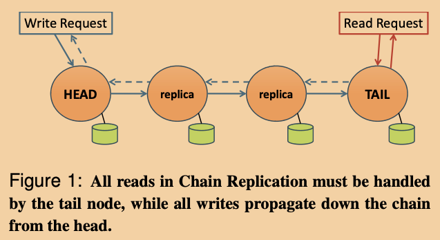

本文是我阅读这篇论文过程中的笔记，以及自己的一些思考。
简介
之前的那篇文章介绍了ZooKeeper相比于Raft的一个特点在于：分担leader读请求的压力，能够在放松对读操作的一致性要求下，大幅提升读操作的性能。
本文介绍的CRAQ是有如下特点：
- 分布式对象存储系统，不像ZooKeeper一样是用树状结构组织数据。
- 对每个存储对象而言，修改操作保证强一致性。
- 读操作保证强一致性。
- 分担leader（本文中称为head）的读请求压力，所有节点均可以响应读请求，提升系统读吞吐量。
- 减少leader（本文中称为head）处理写请求过程中需要交互的节点数。
CRAQ是基于CR（chain replication）架构基础上进行的一些优化，而CR的基本思想为：将所有的所有存放数据的节点以链的形式进行组织，链的头节点head负责处理所有的写请求，而链的尾节点tail用来处理读请求：
- 当head收到来自客户端的写请求的时候，会将写请求执行完该请求后，将请求转发给自己的后继节点，后继节点同理转发给下一个节点，直到请求最终到达tail节点，由tail节点最终响应客户端，至此，代表该请求被提交（committed）。
- 当tail收到读请求时，只能返回被提交的数据。
CRAQ基于CR进行的优化有：
- 让链中所有节点都可以处理读请求，并可以选择保证强一致性。
- 在可以允许读操作返回不一致结果的时候，客户端可以控制返回数据的“过期程度”上限。
- 在构建于多数据中心之上时，能够充分利用数据局部性。
基本系统模型
接口和一致性模型
一个基于对象的存储系统为用户提供了两个简单的元语：
write(objID, V)- V ←
read(objID)
本文主要讨论两种对于某个对象而言的一致性：
- 强一致性：对某个对象的读写操作均会顺序执行，即意味着对某个对象的读操作总能保证读到最新写入的值。
- 最终一致性：在本系统中，意味着在某个写操作还在向tail传播的过程中，客户端可能会读到一些过期的数据，但是当所有节点的都已经收到了某写操作后，读操作就不会再读到比该写操作更旧版本的数据了。事实上，如果客户端如果和某个特定节点维护了一条会话的话，那么在该会话中保证所有的读请求都至少会返回前一个读请求同样新旧程度的数据。
Chain Replication

正如简介中所说CR的原设计中是让tail负责响应客户端。
在本篇论文作者的实现中，他们选择让head来负责响应客户端。当tail最终应用了写操作之后，会开始反向的向上传播确认消息ACK，这个过程由上图中虚线箭头表示。之所以这么设计是因为想要利用head和客户端之间已存在的TCP连接。
即使这种简单拓扑的CR就已经让写操作比其他主从架构的系统的吞吐量更大了。因为在这种实现中，并发的写操作可以通过流水线式的向下传播，整个将写操作广播复制的过程的消耗被均匀的分摊到所有节点上。而其他主从架构的系统的leader需要向所有的副本都发送消息，这导致leader的负载相对CR更高，更容易到达瓶颈。
CR只让tail服务读请求，是因为为了保证强一致性只有tail中的数据是确定commit的，而其他的节点可能存在很多还未commit的数据，甚至节点之间的数据都不一样。
Chain Replication with Appotioned Quereis
针对读请求占主导应用场景，CRAQ希望能够在CR的基础上增加读吞吐量，并且依旧保证强一致性。主要的处理流程如下:

- CRAQ中的节点在存储数据的时候能够存储多个版本的数据，在对象存储系统中，也就是对象。每个对象都有一个单调增加的版本号以及一个额外的属性，代表该版本是否是被提交的，如果是则该属性为clean，反之则设置为dirty。所有版本初始时均为clean。
- 当一个节点收到一个新的写操作的时候（从前驱或者从客户端），会将该最新版本的对象追加到其对应的列表中：
- 如果当前节点不是tail，那么将版本的对象设置为dirty，并向后继转发该写操作。
- 如果当前节点是tail，那么将该版本的对象设置为clean，这时称该版本的该对象committed。之后tail节点就可以反向向上发送确认消息ACK。
- 当一个节点收到对于某个版本对象的ACK消息后会将该版本对象设置为clean，然后可以删除所有该对象之前的版本。
- 当一个节点收到一个关于某对象的读请求的时候:
- 如果当前节点存储的关于该对象的最新版本是clean的，那么当前节点就返回该数值。
- 否则，当前节点应该向tail节点询问该对象的最新的committe的版本号，收到答复后，该节点会将该版本的对象回复给客户端。
当然，一个版本的对象是clean还是dirty还可以从其他方面推导得来，可以观察到，如果一个节点对于某个对象只有一个版本，那么该对象就是clean的，反之，该对象就是dirty的。
从上面的流程可以看出，CRAQ的读吞吐量相比于CR在以下两个场景中均有提升：
- 读操作居多的场景：因为所有节点都可以独立处理读操作，所以吞吐量和链长度C成正比。
- 写操作居多的场景：这时大多数非尾节点收到的读请求都需要向尾节点发送一次version query。但是因为version query相比于直接进行读请求更加轻量，所以这使得尾节点能够支持更高的负载。
对于一个长度很长，并且写操作很多的链来说，一个能想到的优化是可以让尾节点专心服务version query，不再处理读请求。
CRAQ提供的一致性模型
不同的应用有不同的一致性要求，有的应用希望能够保证强一致性，有的应用能够接受一定的不一致性以此希望避免version query带来的开销（当尾节点在很远的地方时version query的开销是挺大的），有的应用希望能够在系统无法提供强一致性时（比如发生网络分区时）还依旧能够提供读服务。
为了满足不同应用的多样化的一致性需求，CRAQ同时为读操作提供了三种不同的一致性模型：
- 强一致性（默认）
- 最终一致性：允许节点返回最新版本的对象。因此，如果之后的读操作被一个不同的节点处理时，可能会得到一个更老版本的数据。当然如果读操作一直由同一个节点处理的话，可以保证读操作返回的数据时间上的单调性。
- 具有上界的最终一致性：允许节点返回某些还没提交的对象，具体的标准可以基于时间，即只能返回某个时间段内未提交的对象，或者基于某个版本号，即允许返回某个版本号后未提交的对象。在一个正常工作的链上，返回不一致的数据指的是返回比最新提交的版本更新的数据。而当系统发生网络分区的时候，将可能会返回比最新提交的版本更老的数据。
CRAQ中的失效恢复
一般来说，链中的每个节点需要知道它的前驱、后继，并且链的头结点和尾节点。当一个头结点失效的时候，它的后继将会立即成为新的头结点；类似的，尾节点的前驱也会替换失效的尾节点。而在链中间的失效的节点时，或者要在链中间加入一个节点时，则需要连接对应节点的前驱和后继，整个过程和双向链表非常类似。
扩展CRAQ集群
本节会讨论不同的构建在单个数据中心内的或者多个数据中心链上的CRAQ的布局。
链的放置策略
分布式存储中可能比较常见的现象有：
- 对于某个对象的大多数或者所有写操作都来自单个数据中心。
- 某些对象可能只和一部分数据中心有关联。
- 一些被频繁访问的对象可能需要更多的备份，而一些冷门的对象可以适当减少备份数量。
CRAQ通过为对象使用两级命名，提供了灵活的链配置策略能够满足多种不用的需求。
一个对象的id包含一个chain id和一个key id。chain id指明了同一条链中的节点，而key id是该对象在链内的唯一标识。
下面列出了多种用来声明应用需求的方式：
Implicit Datacenters & Global Chain Size：
{num_datacenters, chain_size}在该方式中，有几个数据中心会存储该链是确定的，但是具体是哪几个数据中心是没有定义的。可以通过对唯一的datacenter id使用一致性哈希的方式来决定到底是哪些数据中心存储了该链。
Explicit Datacenters & Global Chain Size：
{chain_size, dc1, dc2, ..., dcN}使用这种方式的话，每个数据中心使用相同的链长度来存储数据。而链的头节点是位于数据中心dc1，尾节点位于数据中心dcN，整个链由dc1到dcN之间的节点按序组成。为了确定某个数据中心的哪些节点属于该链的数据节点，需要对chain id使用一致性哈希。每个数据中心都有一个节点连接着前一个数据中心的尾节点，还有一个节点连接着后一个数据中心中首节点。有一种改进是允许
chain_size等于0，那么意味着数据中心的所有节点都是链的一部分。Explicit Datacenter Chain Sizes：
{dc1, chain_size1, ..., dcN, chain_sizeN}这种方式中为每个数据中心各自声明链的长度，这使得可以按需负载均衡。如何在数据中心中确定链节点的方式和前面相同（一致性哈希），同样，这里chain_size也能为0。
在上面的方式2，3中，dc1可以被设置为master数据中心，这意味着所有对该链的写操作都会由该数据中心所接收，当dc1和其他链断开连接的时候，dc2将会在dc1重连回来之前接替作为新的master数据中心。当发生网络分区的时候，写操作只能在包含链中大多数节点的那个分区进行，其他只有少部分节点的分区中，将只能响应具有上界的最终一致性的读操作。
当然CRAQ支持更多更复杂的链配置，比如，显式的指定后备数据中心，只有在某数据中心失效时进行替补。
单个链中能够写入key的数量是没有限制的。这使得链的配置能够灵活的适配应用的需求。
某个数据中心内的CRAQ
在CRAQ的当前实现中，使用一致性哈希来在一个数据中心中放置链，可能会将多个chain id都映射到同一个头结点。这种方式和很多其他基于数据中心的对象存储服务类似。另一个可选的方式是，和GFS还有CR中提到的一样，使用类似目录服务来管理成员关系，而链成员是随机生成的，比如说，每个链可以包含一些随机的节点。这种方法能够潜在提升系统恢复的并行性。但是代价就是需要更高的中心化，以及存储更多的元信息。
跨多数据中心的CRAQ
在将多数据中心组织在一起的时候，应该小心的选择数据中心在链中的顺序，以此来减少写操作的延迟。
但是即使是经过这样优化的链，在需横跨大范围的写操作的延迟层面还是无法和传统的主从架构向媲美，因为主从架构能够并行传输给所有副本节点。但是CRAQ允许将写操作流水线执行，和主从架构相比这大大提高了写操作的吞吐量。
ZooKeeper协作服务
因为从头写一个可靠的协作服务太耗时和复杂，所以CRAQ使用ZooKeeper来提供协作服务。
但是ZooKeeper并没有就在多数据中心环境下运行进行优化，因为vanilla的实现不关心数据中心的网络拓扑结构或层次结构，这使得ZooKeeper节点间需要多次大范围传输协作消息。CRAQ目前的实现确保节点总是和一个附近的ZooKeeper向连。
为了消除ZooKeeper在多数据中心间的冗余消耗，可以选择构建一个层次化的ZooKeeper实例：每个数据中心可以包含他们自己的ZooKeeper实例（由多节点构成），然后可能通过某种leader选举算法，选出一个代表，让该代表加入到全局ZooKeeper实例（多数据中心）中。
另一个可选的设计是通过修改ZooKeeper代码，让它能够感知网络拓扑，CRAQ目前采用的这种方式。
拓展功能
本节主要讨论CRAQ中其他拓展功能，比如mini-transaction，还有使用组播技术来优化写操作。
Mini-Transaction
仅仅提供对对象的整个读写的接口可能并不能满足很多需求，所以CRAQ提供了一些拓展功能来支持事务操作。
针对单个key的操作
CRAQ目前支持以下操作：
Prepend/Append：将数据添加到当前值的开始或者结尾。Increment/Decrement：将某个key对象的值解释为整数并且对其进行加减法操作。Test-and-Set：只有当对象的版本号等于参数中指定的版本时，才执行更新操作。
对于Prepend/Append还有Increment/Decrement操作，头结点可以直接简单的应用于对应对象最新的版本上（即使最新版本还是dirty的），然后将变动后的结果向下传播。如果这类操作很频繁的话，可以考虑让头节点缓存更新操作然后一起打包执行。
对于Test-and-Set操作，头节点会比较当前最新的已经提交的版本是否等于操作要求的版本，如果相等且没有其他正在进行的写操作，那么头节点会接收并执行该操作，如果此时有其他的写操作正在进行中，那么头结点会拒绝该操作请求。如果客户端发现它被频繁的拒绝Test-and-Set请求，那么它会小心的降低请求速率。当然这也可以通过加锁来实现，但是因为严重影响性能，所以这没有被作为一个选项。
Test-and-Set也可以被设计成接受一个值而非一个版本号。为了保证强一致性，头结点只能暂时锁住该对象直到等到该对象变为clean后，再执行Test-and-Set操作。
事务操作
一个对于多个key的修改事务，可以通过一个简单的两阶段提交协议来实现。prepare消息尝试去锁住事务涉及的每个对象，如果成功了，那么协议就提交，反之，那么释放所有的锁，并一会儿再重试。所以这种方式适合少量写操作的场景。
因为应用可以将多个对象存储在CRAQ的同一条链上，那么他们将能够被同一个链头结点所处理，这样整个事务的过程中只会涉及一个节点，单机上实现事务比多节点将容易很多，这是CRAQ实现这种涉及多个key的事务的优势。
即使当事务涉及到多条链上的对象的时候，同样也可以分别锁住对应的对象，然后再提交。
当然这种事务操作会严重影响对应对象的写性能。
通过使用组播技术减少写延迟
CRAQ可以利用组播协议来提高写性能，尤其是对于大规模更新或者说对一条很长的链的更新。因为一般来说虽然链内节点可能有变动，但是在链的层面是一般不会有什么变动的，所以可以为每条链设置一个组播组。在一个数据中心内部，组播协议一般是指网络层上的组播协议，而在更大范围的跨数据中心的组播，一般使用应用层的组播技术。这些组播协议并不提供可靠性和顺序性保证。
和之前直接将整个写操作逐层向下传播不同，使用组播技术可以将数据一次性传给整条链，然后只需要向下逐层传播一小部分元信息来确保所有的尾节点前的节点都已经通过组播协议收到了写操作。如果发现某个节点没有收到，那么它就会从它的前驱节点获取该缺失的数据，之后再继续向下传播元信息消息。
另外当尾节点也已经确认收到了写操作，那么它也会通过组播协议向所有链节点发送确认消息ACK。这会减少各个节点中对象变回clean的时间，也降低了客户端感知到的写延迟。当然因为组播协议是无法确保可靠到达的，所以如果某个节点没有收到ACK消息的话，它会在下次服务读操作进行version query的时候进入clean状态。
管理功能以及其实现
集成ZooKeeper
在初始化阶段，一个CRAQ节点会在/nodes/dc_name/node_id创建一个ephemeral文件，其中dc_name是数据中心的唯一名字，并且node_id是一个节点在其数据中心中的唯一id。该文件的内容为该节点的ip地址和端口号。
在节点创建好文件后，会对/nodes/dc_name文件夹注册一个监视器，这样在未来有节点加入或者被移除系统的时候能够收到通知。
这种方式需要节点监控在数据中心中的所有CRAQ节点。那么为什么不直接让节点注册到他们所属的链中呢？是因为考虑到一般来说链的数量往往至少比系统中的节点数量要打大一个数量级，或者说链的动态性往往比节点层面的变动要高（因为CRAQ是用来管理数据中心的，而不是一个点对点的系统）。
如果上面的假设不成立的话，那么部署的时候也可以让每个节点仅仅监控自己链内的成员变动。
如果必要的话，还可以通过让节点仅仅监控数据中心中的一部分节点，比如通过将节点按照节点id的前缀组织，分别放入/nodes/dc_name/下的目录中，这样节点只需要监控和他们前缀相近的节点就足够了。
链节点功能
节点在加入之前会随机生成一个id，并且通过使用one-hop式的分布式哈希表来组织每个数据中心中的所有节点。一个节点的前驱和后继也是在它在分布式哈希表环中的前驱和后继。链也有160位长的id。对于一个链Ci，它在分布式哈希表中的后继就是该数据中心的第一个节点。【后面关于分布式哈希表的部分还没有理解，等到理解了再来补充。】
所有的节点会维护一个和它的前驱后继还有尾节点的TCP连接池。请求会通过流水线以及round-robin的方法使用连接池内的连接进行。目前作者的实现中，所有的对象都是存储在内存中，非常适合使用类似BerkleyDB的本地KV存储系统来存放。
对于那些横跨多个数据中心的链来说，数据中心中最后一个链节点需要和后继数据中心的第一个节点建立连接，并且需要注册一个对后继数据中心的成员变动的监听。为了避免不必要的跨数据中心通信，链节点会和本数据中心的ZooKeeper节点建立会话。
处理成员变动
对于一些特殊情况，会出现数据向前传播的情况，比如在数据恢复的时候。这种传播方式能够保证节点在新增和删除或者失效的时候的数据一致性。比如一个新节点加入链成为了新的头结点，那么之前的头节点就需要将它的状态向前传播。同时系统也要足够鲁邦去应对一些在数据恢复节点产生的失效，比如当目前的首节点的后继节点在传输数据的过程中失效了，那么后继的后继将要接替完成传输任务。
因为存在潜在的失效情况，所以当一个新节点加入链的时候，会从它的前驱和后继都进行数据同步，以确保数据的正确性。只有当节点的状态和其后继一致的时候，节点才会开始服务读请求。
向前传播的消息中往往包含一个对象的完整状态，包含最近的clean version，还包含所有的dirty version，因为这样才能让该节点响应未来的ACK消息。
假设链C的长度为LC，下面从第N号节点的视角，来考虑一下几种场景：
- 新增节点A
- 如果节点A是N的后继，那么N将所有（或部分，如果对方已有部分数据）属于链C的数据都传输给A。
- 如果节点A是N的前驱，那么：
- N向前传输所有数据。
- 如果N是之前的尾节点的话，那么A将接替成为新的尾节点。
- 如果N的之前的后继为尾节点的话，那么N将接替成为新的尾节点。
- 如果C之前是头结点，那么A将接替成为新的头节点。
- 如果节点A不和N直接相连，但是是在N的前缀节点里：
- 如果N曾是尾节点，那么它将退出链，不再进行交互。
- 如果N的直接后继为尾节点，那么N成为新的尾节点。
- 其他的情况，不需要采取任何措施。
- 删除节点D
- 如果D之前是N的后继，那么N将所有的中关于链C的全部（或者部分 ）数据都传输给N的新后继。即使该新后继可能之前就在链中，但是因为可能之前的节点D在失效前没有将一些正在处理的写操作转发下去，所以N还是需要再传输一遍。
- 如果D之前是N的前驱：
- N将向前传输所有需要的对象到N的新的前驱节点。这是因为D在被删除前可能没有成功发出一些ACK。
- 如果D曾是头结点，那么N将继位。
- 如果N曾是尾节点，那么它将放弃尾节点的身份，将所有链C的数据传输给N的新后继（新尾节点）。
- 如果D不是N的直接前驱，而只是在N的前缀中，并且N之前是链C的尾节点，那么它将放弃尾节点的身份，将所有链C的数据传输给N的新后继（新尾节点）。
- 如果上述情况没有一个符合，那么不采取任何措施。
附录：一些阅读过程中的问题
CRAQ是如何处理网络分区，反之发生脑裂的？
CRAQ和CR本身是没有能力应对网络分区和脑裂的。在短时间内，如果一个节点没有响应，那么其他节点必须等待。因为如果头节点和头节点的后继之间的网络连接失效了，那么他们会互相认为对方失效了，这样的话，头节点会认为目前自己既是头节点也是尾节点，而头结点的后继则认为自己应该继位成为新的头节点。这样就有两个头结点在同时工作了，发生了脑裂。所以节点是绝对不能自己做决定，裁判其他节点的状态。
所以CRAQ和CR依赖于一个单独的配置服务，通过它来决定哪些节点构成了这条链。该配置服务会监控着整个集群的节点的情况，并由它来裁判哪些节点是alive的，哪些是失效的。当节点发生变动的时候，配置服务会通知到所有节点，而节点会根据配置服务中记录的新的链配置信息进行协作。
由此得知这种配置服务应该需要具有容错性，能够抵抗网络分区和脑裂，所以配置服务应该是构建于Paxos、Raft或者像文中的ZooKeeper之上。
像之前的论文中的GFS和VMWare FT也都是采用这种模式来解决这个问题：
- GFS中的master监控其他服务器然后来选择primary。
- VMWare FT中的test-and-set服务器在master宕机后会负责决定一个新的服务器继位。
CR和Raft或者Paxos相比，牺牲了什么？
Raft和Paxos都能在少部分节点失效的时候无需停顿的继续工作，而CR必须要停下来等待配置服务来决定新的链配置。
什么系统在使用CR？
比如亚马逊的EBS、Ceph的Rados，谷歌的Parameter Server，COPS和FAWN